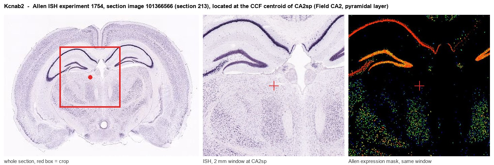
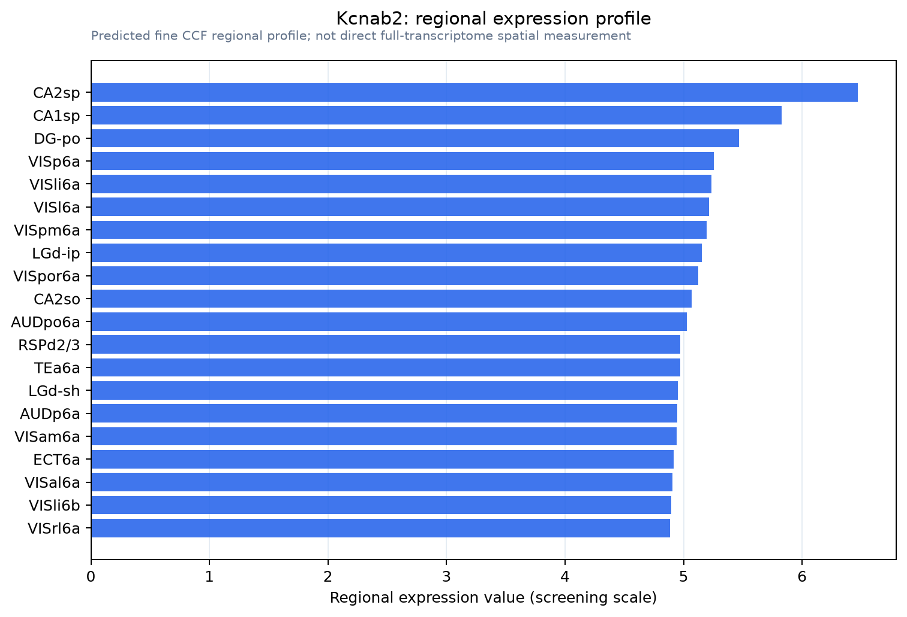

Kcnab2
Voltage-gated potassium channel subunit beta-2 (EC 1.1.1.-) (K(+) channel subunit beta-2) (Kv-beta-2) (Neuroimmune protein F5)
Spatial tier: REGION_BIASED · Class: ION_CHANNEL · Top region: CA2sp (Field CA2, pyramidal layer) · Positive regions: 38/554
Function in CA2sp: evidence, prediction, innovation
- Gene function
- Kcnab2 encodes Kvbeta2, a cytoplasmic auxiliary subunit of Kv1 (Shaker-family) potassium channels. It binds the T1 domain of Kv1.1, Kv1.2 and Kv1.4, promoting folding, surface trafficking and axonal targeting and shifting inactivation; it is itself an aldo-keto reductase whose NADPH state couples gating to redox. Losing it reduces available Kv1 current rather than deleting a pore.
- Region function
- CA2 stratum pyramidale contains the pyramidal cells necessary for social memory, integrating CA3 and entorhinal input and driving CA1; its output is gated by intrinsic excitability and perisomatic inhibition.
- Published in this region
- expression only No functional study of Kcnab2 in CA2. Monaghan et al. 2001 (J Neurosci) mapped Kvbeta2 protein through the rat hippocampal formation, localising it to entorhinal and mossy-fibre axons and terminals rather than somata, and Rhodes et al. 1997 showed it co-assembles with most brain Kv1 complexes; Allen ISH is comparable across CA1sp/CA2sp/CA3sp (CA2sp energy 10.3, dataset 1754).
- Predicted function
- Prediction: Kvbeta2 in CA2 should set Kv1.1/Kv1.2 density at the axon initial segment and presynaptic terminals, damping the slow afterhyperpolarization and controlling spike threshold and output fidelity onto CA1. CA2-restricted deletion is predicted to broaden spikes and raise firing, phenocopying locally the amygdala hyperexcitability and associative-memory deficit of global Kcnab2 knockouts (Perkowski 2011).
- Innovation
- ★★★★☆ 4/5 Kvbeta2 is well studied in amygdala, dopamine neurons and 1p36 epilepsy, but nobody has manipulated it in CA2 despite ready CA2 genetic access.
- Tools
- Kcnab2 knockout mice (Perkowski 2011; Connor 2005); AAV-CRISPR cell-type-specific Kcnab2 mutagenesis validated in vivo (Yee 2022); NeuroMab anti-Kvbeta2 antibodies; dendrotoxin-K to probe the Kv1 currents it supports; CA2 access via Amigo2-Cre.
- References
Direct evidence located at the region

Allen ISH experiment 1754, section image 101366566 (section 213): the section that contains the CCF centroid of Field CA2, pyramidal layer according to the Allen image-to-atlas alignment (reference_to_image), with a 2 mm window around that point. Left: whole section, red box = window. Middle: ISH signal. Right: Allen's expression-mask view of the same window. open this image in the Allen viewer
Direct spatial evidence

Regional expression figure

Predicted WMB × fine-CCF profile; not direct full-transcriptome spatial measurement.
Spatial profile
Evidence and specificity
- Evidence status
- PREDICTED_FINE
- Direct sources
- None; predicted localization only
- Exclusive threshold
- 12 positive regions out of 554
- Spatial specificity
- 0.272
- Top-region fraction
- 0.048
- Filter status
- PASS
Interpretation limits
- Cell-type-to-region projection is imputed expression, not direct spatial measurement.
- Adult reference atlases do not establish stability across age, sex, strain, state, or disease.
- Transcript abundance does not guarantee protein abundance or genetic-tool performance.